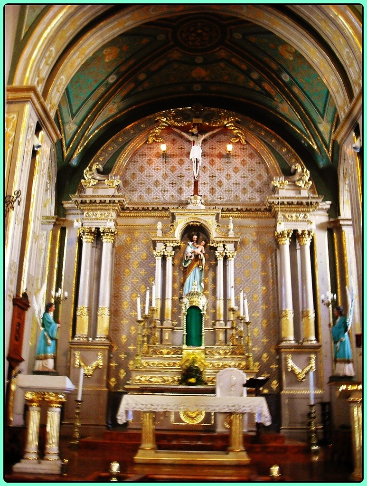
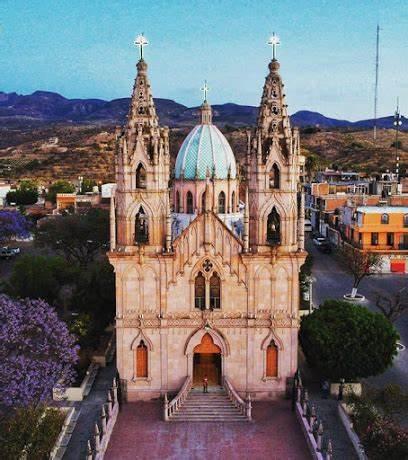

Andador matamoros (calle de las graditas)
El Andador Matamoros, entre la calle Terán y la calle Artículo 115 Constitucional, se construyó en 1980 al colocar las gradas o escalones que le dan su nombre popular: Calle de las Graditas.
En 2016 se remodeló; se reconstruyeron las gradas, se agregaron jardineras, se rehabilitaron las fachadas de las viviendas, se construyeron plazoletas y algunos balcones. También se colocó iluminación de cortesía y escénica.
Ahora La Calle de las Graditas es uno de los atractivos de Calvillo Pueblo Mágico.

Parroquia del señor del salitre
El Templo del Señor de Salitre es uno de los lugares más importantes para visitar en este Pueblo Mágico y es el más importante de la ciudad y está dedicado al Señor de Salitre, esta iglesia también forma parte de los Monumentos Históricos Federales de México así como Patrimonio Cultural de Calvillo.
En la enorme cúpula octagonal que se dice que es la segunda más grande de América Latina en su estilo, se observan hermosas pinturas al fresco en cada segmento que representan diferentes escenas de la vida de San José, otra parte que se destaca de este templo es su altar con un revestimiento dorado, también verás la imagen del Señor del Salitre quien, según se dice, tiene fama de ser muy milagroso.
El cuarto jueves después de la Cuaresma, es decir, el día de la ascensión, se lleva a cabo la Procesión del Señor de Salitre, la Oficina de Turismo del Municipio ofrece el recorrido por los cuatro templos en el tranvía turístico, visita el Templo de Guadalupe, Templo del Señor del Salitre, la Iglesia de San Judas Tadeo y la Parroquia de Ojo Caliente.
La UNESCO consideró la Parroquia del Señor del Salitre como Patrimonio del Estado.

Santuario de nuestra señora de Guadalupe
Construido en las faldas del cerro a mediados del siglo XX, el Santuario de la Virgen de Guadalupe está orientado en dirección a la plaza. Su hermosa e imponente fachada es de cantera y tiene dos torres, lo que recuerda a las catedrales góticas europeas. Adentro vale la pena observar el retablo de hoja de oro, así como la imagen de la santa patrona y los frescos que decoran los muros.
